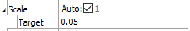
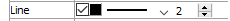

Tensors (Zone) Plot Item
Description
Show zone tensor data for stress or strain. The first few attributes of this plot item are contingent on the first attribute (Type).
Attributes
Type
Select which zone tensor to plot.
Type: select from: “Stress”, “Strain Rate”, “Strain Increment”.
Color-By
Select the scalar value to pull from the tensor for display. Additional attribute fields are supplied as needed; these are noted in the table below.
| Uniformⁿ | Max Shear | XY |
| Orderˡ | Determinant | XZ |
| Minimum | 2nd Dev Invariant | YZ |
| Intermediate | XX | Total Measure |
| Maximum | YY | 2nd Invariant |
| Pressure | ZZ |
| Key: |
| ᴬAll but “Uniform” and “Order” are supplied with a “Contour” attribute |
| ⁿNo additional attribute field is supplied |
| ˡA “Color-List” attribute is supplied |
Color-List/Contour
The attribute appearing in this position is either a Color-List or a Contour, depending on the “Color By” selection. Refer to the standard color-list control description and the standard contour control description for details.
Scale
Scale the item. See the standard scale control description for details.
Line
Set properties of the line used for the item outline. See the standard line control description for details.
Max Num.

Set the maximum number of items to render.
Max Num.: set the number.
Skip

Specify that every nᵗʰ zone should be skipped when generating tensors to render.
Skip: set the skip value.
Map

Map the item to new model coordinates. See the standard map control description for details.
Def-fac

Set the deformation factor. See the standard def-fac control description for details.
Legend

Set item labeling in the plot legend. See the standard legend control description for details.
| Was this helpful? ... | UDEC © 2018, Itasca | Updated: Mar 15, 2024 |